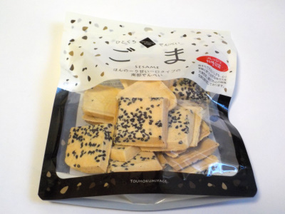

東北みやげ煎餅のひとくちごませんべい
2023/08/05

せんべいって砂糖とか塩や醤油とかでしっかり味付けされたものが多いですが、この商品はあっさり薄味です。
小麦のせんぺいなのでゴマクラッカーを食べているみたいな感じがしました。
この軽い感じがとってもいいです。今日はエアコンの効いた部屋でダラダラしながらこのお菓子を美味しく食べました。
青森県上北郡東北町字篠内平1-43
2023/08/05

せんべいって砂糖とか塩や醤油とかでしっかり味付けされたものが多いですが、この商品はあっさり薄味です。
小麦のせんぺいなのでゴマクラッカーを食べているみたいな感じがしました。
この軽い感じがとってもいいです。今日はエアコンの効いた部屋でダラダラしながらこのお菓子を美味しく食べました。